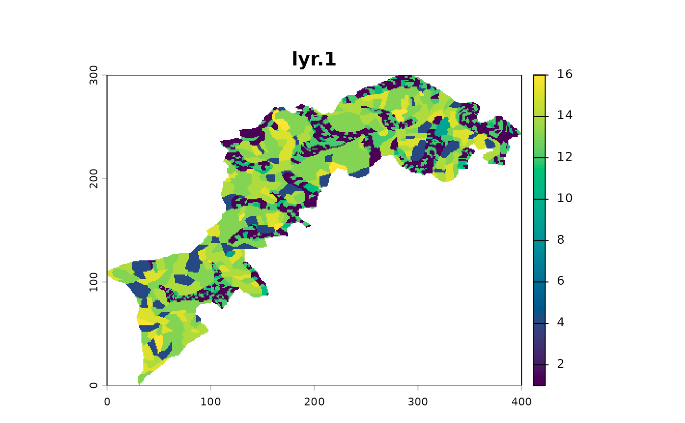
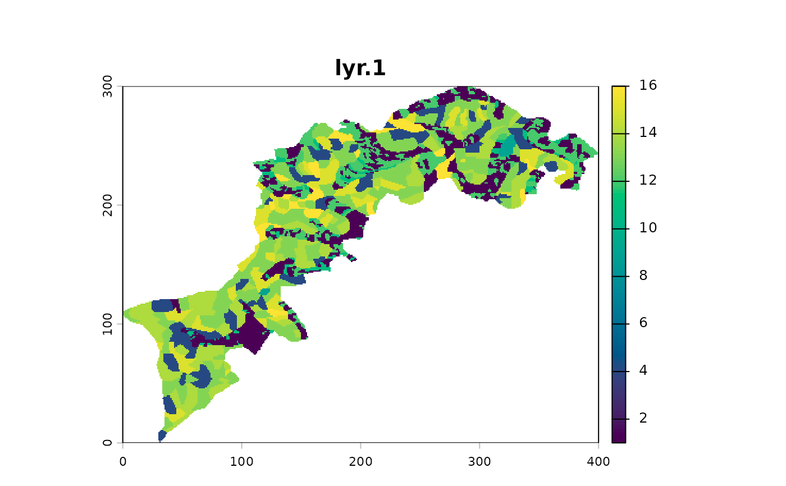

Imports a text file into a raster.
Arguments
- x
character path to file
- header
logical (default to
FALSE) passed toread.table()- na.strings
character (default to
-9999) passed toread.table()- sep
character (default to
" ") passed toread.table()- ...
more params to be passed to
read.table()
Details
A thin wrapper around utils::read.table that creates SpatRaster objects.
For less exotic file formats, you can use the regular terra::rast() methods.
Examples
# use a system.file to make it work here,
# otherwise just point to your file
# these two are smaller (resampled 0.5) versions of their tif counterpart
# because of data volume limitations
system.file("extdata/l1.txt", package = "mucha") %>%
import_txt() %>% p()

system.file("extdata/l2.txt", package = "mucha") %>%
import_txt() %>% p()
